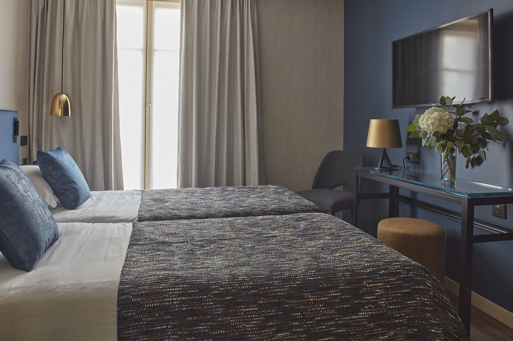
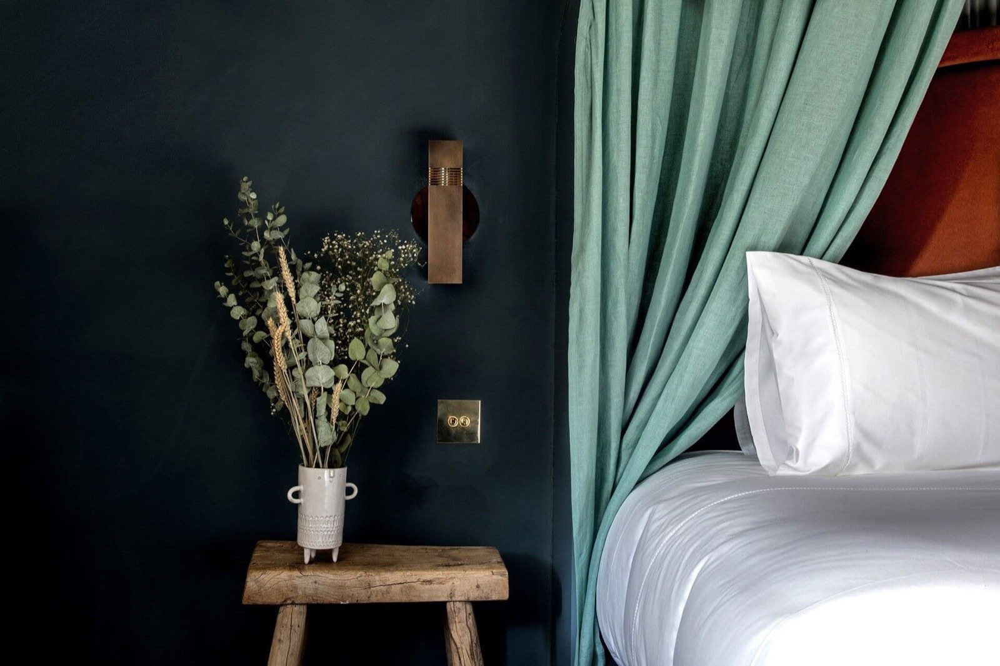
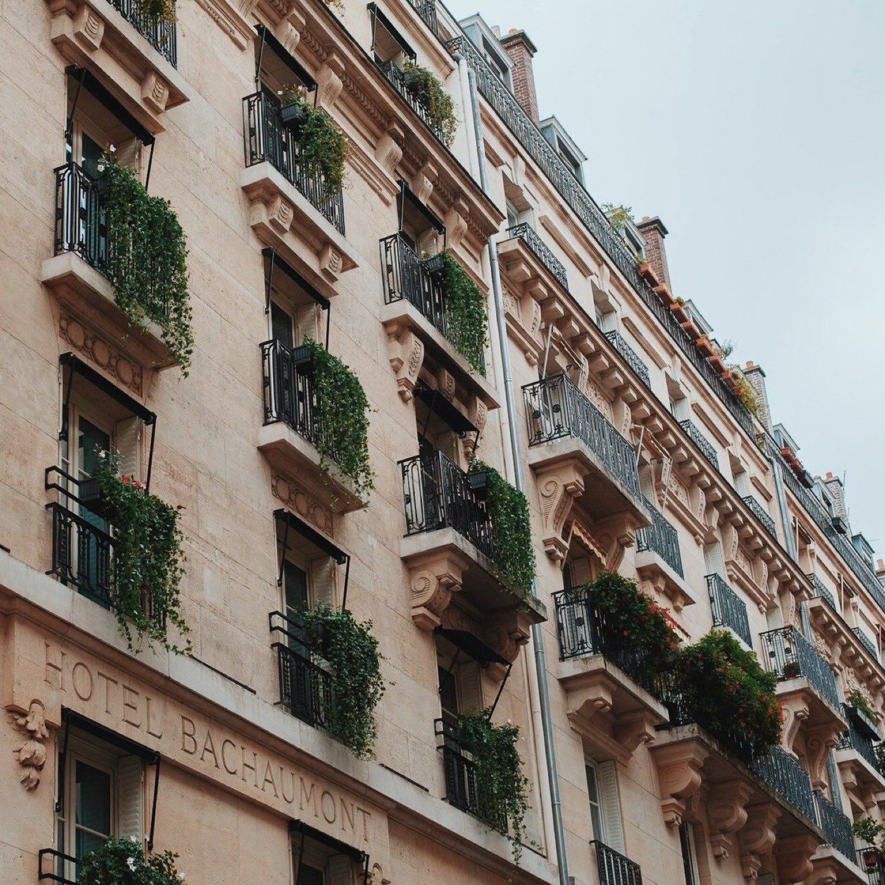

Paris : les meilleurs hôtels 4 étoiles de la capitale
Deux à quatre fois moins cher qu'un palace, pour un service et un design souvent aussi
mémorables. Douze boutique-hôtels passés au crible, de 125 à 285 € la nuit en basse saison.
Par Lucas Lecoq, rédacteur en chef✺Publié le 21 juillet 2026✺16 min de lecture
Le salon de l'Hôtel Fabric, ancienne usine textile du quartier Oberkampf.
Photo : site officiel.
TL;DR : l'essentielLe sweet spot du luxe parisien
Hôtel Atmosphères (5e), 9,1/10 :
notre meilleur rapport qualité-prix, dès 132 €/nuit, sauna inclus, Panthéon à 5 minutes.
Hôtel Récamier (6e), 8,9/10 :
24 chambres signées Jean-Louis Deniot, face à Saint-Sulpice.
La fourchette : de 125 € (Hôtel Panache) à
285 € (Hôtel du Petit Moulin) la nuit en basse saison, soit deux à quatre
fois moins qu'un palace parisien, qui démarre rarement sous 500 €. Et l'écart entre haute et
basse saison atteint 51 à 74 % selon les adresses : le mois de réservation pèse plus lourd
que le choix de l'hôtel.
Pourquoi le 4 étoiles parisien est le meilleur calcul
Paris compte plus de 1 800 hôtels. Trouver le bon 4 étoiles sans se noyer dans les comparateurs, c'est une autre affaire. Nous avons appliqué la grille LMHS Destination à 12 adresses sélectionnées pour leur singularité, leur localisation et leur honnêteté tarifaire, des boutique-hôtels de caractère qui n'ont rien à envier aux grandes enseignes, souvent pour moins cher.
Cette grille note sur 10 et pondère cinq critères : rapport qualité-prix (25 %), un critère thématique adapté à l'objet du classement (25 %, ici le design et la singularité), la localisation (20 %), le service (20 %) et les avis clients vérifiés (10 %). Elle se distingue du Protocole LMHS classique, noté sur 20 après visite anonyme, qui sert à notre palmarès national des 50 meilleurs hôtels & spas de France. Le détail des deux grilles est publié sur notre page méthode.
Le mot de LucasCelui que je choisirais
Si je devais choisir un seul 4 étoiles parisien pour y emmener quelqu'un qui ne connaît pas encore la ville, ce serait l'Hôtel Atmosphères. Pas le plus glamour sur Instagram. Mais à 132 € la nuit en basse saison avec un sauna gratuit, un service quasi familial et le Panthéon à cinq minutes à pied, il n'y a tout simplement pas de concurrence dans ce rapport qualité-prix. Le Fabric est plus séduisant visuellement, le Récamier plus chic, mais aucun des deux ne fait autant avec aussi peu. C'est ça, le vrai luxe abordable.
Lucas Lecoq, rédacteur en chef
L'indice accessibilité : du moins cher au plus cher
Le tableau ci-dessous classe les 12 adresses par prix plancher en basse saison. L'étoile signale le meilleur rapport qualité-prix : pas l'adresse la moins chère, mais celle qui offre le plus pour ce qu'elle demande.
Hôtel
Arr.
Score LMHS
Basse saison
Haute saison
Hôtel Panache
9e
7,9/10
125 €
435 €
Hôtel Atmosphères✺ Meilleur RQP
5e
9,1/10
132 €
416 €
Hôtel Henriette
13e
7,6/10
134 €
332 €
Hôtel Paradis
10e
7,2/10
140 €
327 €
Hôtel Fabric
11e
9,0/10
154 €
412 €
Hôtel Providence
10e
8,7/10
185 €
610 €
Hôtel Le A
8e
8,1/10
199 €
501 €
Hôtel Récamier
6e
8,9/10
217 €
821 €
Hôtel de Nell
9e
8,3/10
220 €
647 €
Hôtel des Grands Boulevards
2e
8,6/10
255 €
589 €
Hôtel Bachaumont
2e
8,4/10
280 €
745 €
Hôtel du Petit Moulin
3e
8,5/10
285 €
582 €
Prix indicatifs chambre standard par nuit, taxes non incluses.
Basse saison = novembre à mars hors fêtes de fin d'année. Relevés en juillet 2026.
Notre sélection : les 12 meilleurs hôtels 4 étoiles
Classés par score LMHS décroissant. Chaque fiche intègre le prix basse saison, le décor, ce qu'on aime vraiment, et le bémol qu'on ne vous cache pas.
01

Hôtel Atmosphères, 5e9,1/10
Quartier Latin, 31 rue des Écoles, à 400 m du Panthéon. Dès 132 € en basse saison, jusqu'à 416 € en haute saison.
Le Quartier Latin a ses clichés. L'Hôtel Atmosphères les contourne tous. Dans cette rue des Écoles coincée entre la Sorbonne et Notre-Dame, le boutique-hôtel joue la carte du service presque familial, les clients réguliers connaissent les prénoms de la réception, et ça se sent dès l'arrivée. Décor contemporain sans froideur : bois sombre, lumières tamisées, une atmosphère de salon littéraire.
Ce qui fait vraiment la différence, c'est l'offre bien-être incluse : sauna, salle de fitness et fauteuil massant gratuits pour tous les clients. Rare pour un 4 étoiles à ce tarif. Thé et café offerts l'après-midi. Note TripAdvisor de 4,6/5 sur plus de 2 150 avis, une constance remarquable.
Le bémol LMHS : les chambres sont petites, très petites pour certaines. Ouvrir deux grandes valises simultanément relève du défi. Le ménage se fait sur demande uniquement.
Pour qui : couples, voyageurs solo, amateurs de culture qui veulent la rive gauche sans se ruiner
02
Hôtel Fabric, 11e9,0/10
Oberkampf, 31 rue de la Folie-Méricourt, entre République et Bastille. Dès 154 €, jusqu'à 412 €.
L'ancienne usine textile du 11e transformée en boutique-hôtel design. Murs de briques apparentes, colonnes de fonte, grandes fenêtres industrielles, tout rappelle le passé ouvrier du quartier sans tomber dans la déco de façade. 33 chambres seulement, toutes climatisées, toutes différentes par la surface mais identiques dans le soin apporté.
En juillet 2026, le Fabric a décroché la 12e place du classement TripAdvisor Travellers' Choice Best of the Best pour la France. Espace bien-être, tea time quotidien, honesty bar et conciergerie 24 h/24 forment un ensemble cohérent. Oberkampf est le meilleur quartier de Paris pour sortir le soir.
Le bémol LMHS : les chambres « Club » (16-18 m²) sont vraiment exiguës pour le prix en haute saison. Septembre, le mois le plus cher, peut faire grimper la note à 412 €.
Pour qui : design lovers, couples, voyageurs qui veulent un Paris vivant loin des circuits touristiques
03
Hôtel Récamier, 6e8,9/10
Saint-Germain-des-Prés, 3 bis place Saint-Sulpice, face à l'église. Dès 217 €, jusqu'à 821 €.
Place Saint-Sulpice. Le nom suffit à situer l'ambiance. Le Récamier est un bijou confidentiel conçu par le décorateur Jean-Louis Deniot, chacune des 24 chambres a son propre thème chromatique, entre monochrome moderne et inspiration africaine, avec des lignes pures qui n'ont rien à envier aux palaces voisins. La moitié des chambres donne sur la fontaine monumentale de la place.
Tea time offert chaque après-midi de 16 h à 18 h. Le petit-déjeuner buffet (26 €) est l'un des plus généreux de notre sélection. Note Expedia de 9,6/10, exceptionnel. L'hôtel est sélectionné au Guide Michelin.
Le bémol LMHS : les chambres restent modestes en superficie. En haute saison, les tarifs s'envolent jusqu'à 821 €, on sort du sweet spot 4 étoiles.
Pour qui : amateurs de design parisien chic, couples en week-end romantique, Saint-Germain sans le bruit
04
Hôtel Providence, 10e8,7/10
Canal Saint-Martin, 90 rue René Boulanger. Dès 185 €, jusqu'à 610 €.
Dix-huit chambres. Pas une de plus. Le Providence joue délibérément la carte de l'intime dans un 10e en pleine effervescence gastronomique. Le décor mêle velours profonds, papiers peints botaniques et mobilier chiné, un hôtel qui assume son identité sans chercher à plaire à tout le monde.
L'adresse est idéale pour explorer le Canal Saint-Martin, la rue du Faubourg-Saint-Denis et ses restaurants naturels, ou rejoindre le Marais en dix minutes à pied. Le quartier a changé de visage en cinq ans, c'est désormais l'un des plus intéressants de Paris.
Le bémol LMHS : dix-huit chambres, ça se réserve des semaines à l'avance. En haute saison, les prix peuvent tripler (jusqu'à 610 €). Pas de spa ni de fitness sur place. Et la note client, bien qu'excellente (9,4/10), repose sur un volume d'avis encore faible.
Pour qui : couples, amateurs de bistronomie, voyageurs qui veulent un Paris authentique loin du Marais saturé
05

Hôtel des Grands Boulevards, 2e8,6/10
Grands Boulevards, entre Opéra et Bonne Nouvelle. Dès 255 €, jusqu'à 589 €.
L'adresse Experimental Group qui a le mieux vieilli. Installé dans un immeuble haussmannien du 2e, il mêle boiseries d'époque, plantes tropicales et mobilier vintage dans une atmosphère de club parisien du XIXe siècle revisité. Le restaurant du rez-de-chaussée est une vraie table, pas un service hôtelier de seconde zone.
La localisation est parfaite pour qui veut tout Paris à pied : le Marais à dix minutes, l'Opéra Garnier à cinq, les meilleures adresses du 2e à la porte.
Le bémol LMHS : le prix plancher à 255 € en basse saison est le plus élevé de la catégorie « rive droite centrale ». Le petit-déjeuner (24 €) est facturé en supplément.
Pour qui : Paris dans sa version la plus « parisienne », amateurs de gastronomie, couples
06
Hôtel du Petit Moulin, 3e8,5/10
Marais, 29 rue de Poitou, à dix minutes de la place des Vosges. Dès 285 €, jusqu'à 582 €.
Christian Lacroix a signé chacune des 17 chambres. Miroirs au plafond, papiers peints panoramiques, kaléidoscopes, rayures et fleurs baroques, c'est probablement l'hôtel le plus photographié de notre sélection. Installé dans une ancienne boulangerie du Marais dont la devanture d'origine est conservée, il est sélectionné au Guide Michelin et fait partie des Small Luxury Hotels of the World.
Le service est chaleureux et professionnel, la note Booking atteint 9,0/10. Pour les amateurs de décoration audacieuse, c'est une expérience unique, chaque chambre est un tableau différent.
Le bémol LMHS : les chambres sont petites (16 à 35 m²) pour des prix qui démarrent à 285 €, le plus haut plancher du palmarès. Quelques avis signalent un nettoyage des salles de bain perfectible. Le petit-déjeuner (23 €) est jugé basique.
Pour qui : amateurs de mode et de design, couples en week-end, une chambre comme nulle autre
07

Hôtel Bachaumont, 2e8,4/10
Sentier / Châtelet, 18 rue Bachaumont. Dès 280 €, jusqu'à 745 €.
Le plus complet de notre sélection en termes de services. 49 chambres, un spa dédié avec massages et soins beauté, une salle de fitness, le restaurant La Cuisine (cuisine française de partage), bar, terrasse privée, location de vélos, et une politique animal friendly sans frais supplémentaires. Rénové en 2019, il affiche 9,3/10 sur ses plateformes de réservation.
Le quartier Sentier est devenu en cinq ans l'épicentre de la tech et du design parisien. Excellente desserte en transports.
Le bémol LMHS : le prix plancher à 280 € est élevé pour le 2e. En haute saison, les tarifs peuvent atteindre 745 €, on frôle le territoire des 5 étoiles.
Pour qui : couples bien-être, voyageurs d'affaires, amateurs de gastronomie qui veulent tout sur place
08
Hôtel de Nell, 9e8,3/10
Grands Boulevards, 7-9 rue du Conservatoire, à 330 m du métro Bonne Nouvelle. Dès 220 €, jusqu'à 647 €.
Une signature architecturale. Jean-Michel Wilmotte, l'architecte du Louvre Abu Dhabi, a conçu les 33 chambres dans un style contemporain épuré, avec des salles de bain d'inspiration japonaise. Béton poli, bois clair, lignes droites : c'est l'anti-baroque parisien, et ça fonctionne parfaitement. La lumière naturelle est travaillée avec soin dans chaque espace.
L'adresse est discrète, rue du Conservatoire, peu de passage, ce qui explique le calme exceptionnel de l'établissement. Idéal pour être au centre sans subir le bruit des Grands Boulevards.
Le bémol LMHS : 220 € en basse saison reste élevé pour un 9e sans restaurant intégré. En haute saison, les Deluxe montent à 647 €, difficile à justifier face à la concurrence.
Pour qui : amateurs d'architecture minimaliste, voyageurs qui privilégient le calme, week-end design
09
Hôtel Le A, 8e8,1/10
Champs-Élysées, 4 rue d'Artois, à deux pas du Triangle d'Or. Dès 199 €, jusqu'à 501 €.
La bonne surprise du 8e. Dans un quartier dominé par les palaces et les enseignes de luxe, cet hôtel de 26 chambres joue la carte de l'art contemporain : les murs sont couverts d'œuvres originales, les espaces communs ressemblent à une galerie privée. Tea time quotidien, bar à cocktails, service de chambre, les prestations sont soignées.
Le prix d'entrée à 199 € en basse saison est l'un des plus compétitifs du 8e pour un 4 étoiles.
Le bémol LMHS : le 8e reste un quartier peu animé le soir pour qui cherche la vie parisienne authentique. Pas de restaurant intégré. Octobre est le mois le plus cher, prévoir en conséquence.
Pour qui : amateurs d'art, voyageurs d'affaires, le prestige de l'adresse sans le prix palace
10
Hôtel Panache, 9e7,9/10
Grands Boulevards, angle des Grands Boulevards et de la rue du Faubourg-Montmartre. Dès 125 €, jusqu'à 435 €.
Le moins cher de notre sélection en basse saison, 125 € la nuit, c'est exceptionnel pour un 4 étoiles parisien. Le design Art déco signé Dorothée Meilichzon est authentique : moulures d'époque, carrelages géométriques, mobilier des années 30 restauré. Chaque chambre est différente. Le personnel est unanimement salué.
La localisation est imbattable pour explorer Paris : Montmartre à quinze minutes à pied, l'Opéra Garnier à cinq, le Marais à vingt. Le métro Grands Boulevards est à la porte.
Le bémol LMHS : l'isolation phonique est insuffisante, bruit des couloirs, des sanitaires voisins, des conversations. Les chambres sont étroites avec peu de rangements. Le petit-déjeuner est jugé cher pour ce qu'il propose.
Pour qui : un bon 4 étoiles sans se ruiner, amateurs d'Art déco, première visite à Paris
11
Hôtel Henriette, 13e7,6/10
Gobelins, 9 rue des Gobelins, à cinq minutes de la rue Mouffetard. Dès 134 €, jusqu'à 332 €.
L'adresse confidentielle du 13e, un arrondissement injustement ignoré des guides touristiques. Le décor joue la carte du cocooning : rotin, plantes vertes, tissus naturels, lumière dorée. Une atmosphère de maison de campagne transportée dans Paris. Le petit-déjeuner buffet (16 €) est l'un des moins chers de notre sélection.
La rue Mouffetard et ses marchés sont à cinq minutes, le Jardin des Plantes à dix. C'est un Paris moins fréquenté, plus local, et c'est exactement ce que cherche la clientèle fidèle de l'Henriette.
Le bémol LMHS : le 13e est moins bien desservi pour les grandes attractions touristiques. Pas de fitness ni de spa. Le score reflète une singularité moindre face aux autres adresses de la sélection.
Pour qui : voyageurs curieux, couples en quête d'un Paris authentique, amateurs de marchés et de bistrots
12
Hôtel Paradis, 10e7,2/10
Porte Saint-Denis, 41 rue des Petites Écuries, à quinze minutes du Canal Saint-Martin. Dès 140 €, jusqu'à 327 €.
La petite adresse de quartier qui a su grandir sans perdre son âme. Dans la rue des Petites Écuries, l'une des plus animées du 10e, elle propose un décor soigné, coloré, avec des chambres qui jouent sur les contrastes graphiques. La proximité des gares du Nord et de l'Est en fait une base pratique pour les courts séjours.
Le bémol LMHS : le score le plus bas de notre sélection reflète un manque de singularité et de services haut de gamme. La rue des Petites Écuries est animée, lisez : bruyante le soir. Pas de spa, pas de fitness, pas de restaurant intégré.
Pour qui : voyageurs en transit, budgets serrés, amateurs du Paris populaire et vivant du 10e
Par quartier : quel 4 étoiles selon votre Paris
Paris ne se visite pas de la même façon selon qu'on aime les musées, les bistrots ou les galeries d'art. Voici comment choisir selon votre programme.
Rive droite : Marais, Opéra, Grands Boulevards
C'est le cœur historique et commercial de Paris. Le Marais (3e) est idéal pour les amateurs de mode et de galeries, l'Hôtel du Petit Moulin (Christian Lacroix) y règne sans partage. Le 2e (Bachaumont, Grands Boulevards) offre la meilleure combinaison centralité-gastronomie, avec le Sentier en pleine mutation créative. Le 9e (Panache, de Nell) est parfait pour Montmartre et l'Opéra Garnier.
Notre recommandation : l'Hôtel des Grands Boulevards pour l'expérience parisienne complète, ou l'Hôtel Panache si le budget prime.
Rive gauche : Saint-Germain, Quartier Latin
La rive gauche reste le Paris des intellectuels, des libraires et des cafés historiques. L'Hôtel Récamier (place Saint-Sulpice) est l'adresse de référence pour qui veut Saint-Germain-des-Prés dans sa version la plus authentique. L'Hôtel Atmosphères (5e) offre le meilleur rapport qualité-prix de toute notre sélection, avec le Quartier Latin à portée de main.
Notre recommandation : le Récamier pour le romantisme, l'Atmosphères pour le rapport qualité-prix. Les deux sont à vingt minutes à pied l'un de l'autre.
Paris Est : Oberkampf, République, Gobelins
Le Paris Est, 10e, 11e, 13e, est le Paris qui bouge. Bistronomie, bars naturels, galeries émergentes, marchés de quartier. L'Hôtel Fabric (11e) est l'adresse de référence de ce Paris-là. L'Hôtel Providence (10e) joue la carte de l'intime dans un arrondissement en pleine renaissance gastronomique. L'Hôtel Henriette (13e) est pour les explorateurs qui veulent un Paris vraiment local.
Notre recommandation : l'Hôtel Fabric sans hésitation, sauf si vous préférez l'intimité absolue, auquel cas le Providence (18 chambres) est imbattable.
Quel est le meilleur hôtel 4 étoiles à Paris en rapport qualité-prix ?
L'Hôtel Atmosphères (5e arr.) : à partir de 132 € la nuit en basse saison, avec sauna inclus, service exceptionnel et emplacement Quartier Latin. Il obtient 9,1/10 à la grille LMHS Destination, le meilleur score de cette sélection. L'Hôtel Panache est légèrement moins cher (125 €), mais avec un score de 7,9/10 : moins d'hôtel pour à peine moins d'argent.
Quelle est la différence entre un hôtel 4 étoiles et un palace à Paris ?
Un palace (5 étoiles ou distinction Palace) à Paris démarre rarement sous 500 € la nuit. Un bon 4 étoiles propose un service personnalisé, un design soigné et un emplacement central pour 125 à 285 € en basse saison, soit deux à quatre fois moins cher, sans sacrifier l'essentiel. Les boutique-hôtels comme le Fabric ou le Récamier offrent même une singularité que les grandes chaînes de palaces ne peuvent pas reproduire.
Quel quartier de Paris est le meilleur pour un hôtel 4 étoiles ?
Tout dépend de votre programme. Le Marais (3e) et les Grands Boulevards (2e/9e) offrent le meilleur compromis centralité-vie de quartier. Saint-Germain (6e) séduit pour la rive gauche chic. Le 11e (Oberkampf) est idéal pour le Paris vivant et branché. Le 5e (Quartier Latin) est parfait pour visiter à pied tout en dormant dans un 4 étoiles abordable.
À quelle période réserver un hôtel 4 étoiles à Paris pour avoir les meilleurs prix ?
La basse saison parisienne s'étend de novembre à mars, hors fêtes de fin d'année. Sur notre sélection, l'écart entre le tarif de haute saison et celui de basse saison va de 51 % (Hôtel du Petit Moulin) à 74 % (Hôtel Récamier) : c'est le levier le plus puissant à votre disposition. Évitez juin, septembre (Fashion Week, salons professionnels) et les grands événements sportifs. Le lundi et le mardi sont généralement les nuits les moins chères.
Comment fonctionne le protocole de notation LMHS ?
Ce palmarès applique la grille LMHS Destination, notée sur 10, qui agrège cinq critères pondérés : rapport qualité-prix (25 %), critère thématique, ici design et singularité (25 %), localisation (20 %), service (20 %) et avis clients vérifiés (10 %). Elle s'appuie sur des données publiques vérifiées, des avis croisés entre TripAdvisor, Booking.com et Expedia, et les grilles tarifaires relevées. Elle se distingue du Protocole LMHS classique, noté sur 20 après visite anonyme. Notre méthode complète.
Méthode et sources
12 établissements retenus parmi les plus de 1 800 hôtels que compte Paris. Grille LMHS Destination, notée sur 10 : rapport qualité-prix (25 %), design et singularité (25 %), localisation (20 %), service (20 %), avis clients vérifiés (10 %). Aucun partenariat commercial, aucune affiliation. Tarifs relevés en juillet 2026 sur les sites officiels et les plateformes de réservation, chambre standard, taxes non incluses. Photographies : sites officiels des établissements cités.